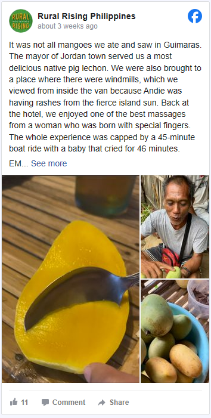
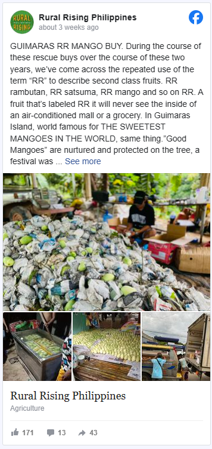

MANILA, Philippines – If you can’t get enough of Philippine sweet mangoes, you’ll love Rural Rising’s newest mango-nificent deal – the socio-agricultural enterprise is holding a Guimaras RR Mango Rescue Buy, where four kilos of the “sweetest mangoes in the world” will cost P820, hand-picked by Guimaras Island’s farmers. Rural Rising has over a boatload of authentic mangoes from the island that need a new home. The term “RR” means that they are “second-class fruits,” meaning they will “never see the insides of an air-conditioned mall or a grocery.”  “Good mangoes are nurtured and protected on the tree. What about its RR mangoes? An RR is left to survive and grow as best it can at the mercy of the unforgiving insect and unforgiving buyer. They are not lovingly covered with paper like ‘legitimate’ mangoes — they find no love, they grow small,” RuRi wrote.  “This unwanted child has so much to prove and it dies. But you know what? On the Brix sweetness score it is EQUAL OR BETTER than good mangoes, even if they are smaller,” they added. RuRi is helping several mango farmers in Guimaras Island by buying all their RR mangoes at a good price. As of writing, there are 80 orders in stock on RuRi’s website. The dispatch date has yet to be announced. Order pick-ups can be done at any of RuRi’s three points: RuRi Central in Avida Towers Centera, EDSA cor. Reliance Street, Mandaluyong City; RuRi North in 22 Congressional Avenue, Project 8, Quezon City; and RuRi in South Old Transport Terminal Bldg., Alabang Town Center, Theater Dr., Ayala Alabang, Muntinlupa. RuRi advises customers to claim their produce within 48 hours of the dispatch date, as fresh produce spoils quickly. “In context of these Rescue Buys, it will be a tragedy to save produce from one place only to have it spoil in our hands. We shall donate all unclaimed produce in your name to hungry communities like Barangay Tatalon in Quezon City,” they said. Rural Rising has been actively supporting local farming communities by hosting regular rescue buys. Campaigns have contributed to the sale of kamote from Guimaras, basil from Pampanga, sweet corn from Pangasinan, and pineapples from Isabela, among many others. – Steph Arnaldo/Rappler.com